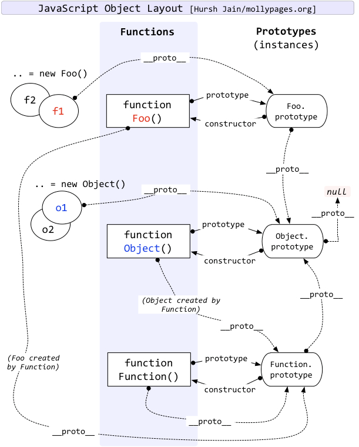

语法专题
Generics（泛型）
dart
如果你查看 List 类型的 API 文档， 则可以看到 实际的类型定义为
List<E>。 这个 <…> 声明 list
是一个 泛型 (或者 参数化) 类型。
通常情况下，使用一个字母来代表类型参数， 例如 E, T, S, K, 和 V 等。
// 一个保存缓存对象 的接口
abstract class ObjectCache {
Object getByKey(String key);
setByKey(String key, Object value);
}
// 一个用来缓存字符串的实现
abstract class StringCache {
String getByKey(String key);
setByKey(String key, String value);
}
// 泛型可以避免这种重复的代码。 你只需要创建一个接口即可：
abstract class Cache<T> {
T getByKey(String key);
setByKey(String key, T value);
}
// 在上面的代码中，T 是一个备用类型。
// 这是一个类型占位符， 在开发者调用该接口的时候会指定具体类型。go
js
python
Using collection literals（使用集合字面量）
dart
List 和 map 字面量也是可以参数化的。 参数化定义 list 需要在中括号之前
添加 <type> ， 定义 map 需要在大括号之前 添加
<keyType, valueType>。
var names = <String>['Seth', 'Kathy', 'Lars'];
var pages = <String, String>{
'index.html': 'Homepage',
'robots.txt': 'Hints for web robots',
'humans.txt': 'We are people, not machines'
};go
js
python
Using parameterized types with constructors（在构造函数中使用泛型）
dart
var names = new List<String>();
names.addAll(['Seth', 'Kathy', 'Lars']);
var nameSet = new Set<String>.from(names);
// 下面代码创建了一个 key 为 integer， value 为 View 类型 的 map：
var views = new Map<int, View>();go
js
python
泛型判断
dart
Dart 的泛型类型是固化的，在运行时也 可以判断具体的类型。
var names = new List<String>();
names.addAll(['Seth', 'Kathy', 'Lars']);
print(names is List<String>); // truego
js
python
Restricting the parameterized type（限制泛型类型）
dart
// T must be SomeBaseClass or one of its descendants.
class Foo<T extends SomeBaseClass> {...}
class Extender extends SomeBaseClass {...}
void main() {
// It's OK to use SomeBaseClass or any of its subclasses inside <>.
var someBaseClassFoo = new Foo<SomeBaseClass>();
var extenderFoo = new Foo<Extender>();
// It's also OK to use no <> at all.
var foo = new Foo();
// Specifying any non-SomeBaseClass type results in a warning and, in
// checked mode, a runtime error.
// var objectFoo = new Foo<Object>();
}go
js
python
Using generic methods（使用泛型函数）
dart
一开始，泛型只能在 Dart 类中使用。 新的语法也支持在函数和方法上使用泛型了。
这里的 first (<T>) 泛型可以在如下地方使用 参数 T ：
- 函数的返回值类型 (T).
- 参数的类型 (
List<T>). - 局部变量的类型 (T tmp).
T first<T>(List<T> ts) {
// ...Do some initial work or error checking, then...
T tmp ?= ts[0];
// ...Do some additional checking or processing...
return tmp;
}go
js
python
Asynchrony support（异步支持）
dart
异步编程通常使用回调函数，但是 Dart 提供了另外的 选择：
Future 和 Stream 对象。 Future 和
JavaScript 中的 Promise 类似，
代表在将来某个时刻会返回一个 结果。 Stream
是一种用来获取一些列数据的方式，例如 事件流。
在 Dart 库中随处可见 Future 对象，通常异步函数返回的对象就是一个 Future。
Dart 库中有很多返回 Future 或者 Stream 对象的方法。 这些方法是 异步的： 这些函数在设置完基本的操作 后就返回了， 而无需等待操作执行完成。
Stream 在 Dart API 中也经常出现，代表一些列数据。 例如， HTML 按钮点击事件就可以使用 stream 来表示。 还可以把读取文件内容当做一个 Stream。
有两种方式可以使用 Future 对象中的 数据：
- 使用 async 和 await
- 使用 Future API
Future 类似js中的 Promise
// 要使用 await，其方法必须带有 async 关键字：
checkVersion() async {
var version = await lookUpVersion();
if (version == expectedVersion) {
// Do something.
} else {
// Do something else.
}
}
// 可以使用 try, catch, 和 finally 来处理使用 await 的异常：
try {
server = await HttpServer.bind(InternetAddress.LOOPBACK_IP_V4, 4044);
} catch (e) {
// React to inability to bind to the port...
}
// 使用 then() 可以在 Future 完成的时候执行其他代码 来解析返回的数据：
HttpRequest.getString(url).then((String result) {
print(result);
});
// Should handle errors here.
// 使用 catchError() 来处理 Future 对象可能抛出的 各种异常和错误：
HttpRequest.getString(url).then((String result) {
print(result);
}).catchError((e) {
// Handle or ignore the error.
});
// then() 函数返回值为 Future，可以把多个异步调用给串联起来。
// 如果 then() 函数注册的回调函数也返回一个 Future，而 then() 返回一个同样的 Future。
// 如果回调函数返回的是一个其他类型的值， 则 then() 会创建一个新的 Future 对象 并完成这个 future。
Future result = costlyQuery();
return result.then((value) => expensiveWork())
.then((value) => lengthyComputation())
.then((value) => print('done!'))
.catchError((exception) => print('DOH!'));
// 要想在每个数据到达的时候就去处理，则可以选择使用 await for 或者 使用 listen() 函数来订阅事件：
// Find a button by ID and add an event handler.
querySelector('#submitInfo').onClick.listen((e) {
// When the button is clicked, it runs this code.
submitData();
});
// 经常你需要先转换 stream 里面的数据才能使用。
// 使用 transform() 函数可以生产另外一个数据类型 的 Stream 对象：
var stream = inputStream
.transform(UTF8.decoder)
.transform(new LineSplitter());
// 上面的代码使用两种转换器（transformer）。
// 第一个使用 UTF8.decoder 来把整数类型的数据流转换为字符串类型的数据流。
// 然后使用 LineSplitter 把字符串类型数据流转换为按行分割的数据流。go
js
const promise = new Promise(function(resolve, reject) {
// ... some code
if (/* 异步操作成功 */){
resolve(value);
} else {
reject(error);
}
});
promise.then(function(value) {
// success
}, function(error) {
// failure
});
// 下面是异步加载图片的例子
function loadImageAsync(url) {
return new Promise(function(resolve, reject) {
const image = new Image();
image.onload = function() {
resolve(image);
};
image.onerror = function() {
reject(new Error('Could not load image at ' + url));
};
image.src = url;
});
}
const preloadImage = function (path) {
return new Promise(function (resolve, reject) {
const image = new Image();
image.onload = resolve;
image.onerror = reject;
image.src = path;
});
};
// Promise对象实现的 Ajax 操作的例子
const getJSON = function(url) {
const promise = new Promise(function(resolve, reject){
const handler = function() {
if (this.readyState !== 4) {
return;
}
if (this.status === 200) {
resolve(this.response);
} else {
reject(new Error(this.statusText));
}
};
const client = new XMLHttpRequest();
client.open("GET", url);
client.onreadystatechange = handler;
client.responseType = "json";
client.setRequestHeader("Accept", "application/json");
client.send();
});
return promise;
};
getJSON("/posts.json").then(function(json) {
console.log('Contents: ' + json);
}, function(error) {
console.error('出错了', error);
});
// 调用resolve或reject并不会终结 Promise 的参数函数的执行
new Promise((resolve, reject) => {
resolve(1);
console.log(2);
}).then(r => {
console.log(r);
});
// 2
// 1
// 可以发现reject方法的作用，等同于抛出错误。
// 如果 Promise 状态已经变成resolved，再抛出错误是无效的。
// bad
promise.then(function(data) {
// success
}, function(err) {
// error
});
// good
promise.then(function(data) { //cb
// success
}).catch(function(err) {
// error
});
// 有时需要将现有对象转为 Promise 对象，Promise.resolve方法就起到这个作用。
Promise.resolve('foo')
// 等价于
new Promise(resolve => resolve('foo'))
// 顺序执行异步任务的小技巧
const sleep = (ms=1000) => new Promise((resolve, reject) => {
setTimeout(resolve, ms);
});
var sequence = Promise.resolve();
[1,2,3].forEach(item => {
sequence = sequence.then(async ()=>{
console.log(item);
await sleep();
})
});
// 顺序执行异步任务的小技巧
// 构建队列
const sleep = (ms=1000) => new Promise((resolve, reject) => {
setTimeout(()=>{
console.log(ms)
resolve(ms+1000);
}, ms);
});
function queue(arr) {
var sequence = Promise.resolve()
arr.forEach(function (f) {
sequence = sequence.then(f)
})
return sequence
}
// 执行队列
queue([sleep,sleep,sleep]).then(data => {
console.log('end',data)
});
// 1000
// 2000
// 3000
// end 4000
// await实现队列任务
const sleep = (ms=1000) => new Promise((resolve, reject) => {
setTimeout(()=>{
console.log(ms)
resolve(ms+1000);
}, ms);
});
async function queue(arr) {
let res = null
for (let f of arr) {
res = await f(res)
}
return await res
}
queue([sleep,sleep,sleep]).then(data => {
console.log('end',data)
});
// null
// 1000
// 2000
// end 3000python
Declaring async functions（声明异步方法）
dart
一个 async 方法 是函数体被标记为 async 的方法。
checkVersion() async {
// ...
}
lookUpVersion() async => /* ... */;
// 下面是一个返回字符串 的同步方法
String lookUpVersionSync() => '1.0.0';
// 如果使用 async 关键字，则该方法 返回一个 Future，并且 认为该函数是一个耗时的操作。
// 方法的函数体并不需要使用 Future API。 Dart 会自动在需要的时候创建 Future 对象
Future<String> lookUpVersion() async => '1.0.0';go
js
// 函数声明
async function foo() {}
// 函数表达式
const foo = async function () {};
// 对象的方法
let obj = { async foo() {} };
obj.foo().then(...)
// Class 的方法
class Storage {
constructor() {
this.cachePromise = caches.open('avatars');
}
async getAvatar(name) {
const cache = await this.cachePromise;
return cache.match(`/avatars/${name}.jpg`);
}
}
const storage = new Storage();
storage.getAvatar('jake').then(…);
// 箭头函数
const foo = async () => {};python
Using await expressions with Futures（使用 await 表达式）
dart
在 await expression 中， expression 的返回值通常是一个 Future； 如果返回的值不是 Future，则 Dart 会自动把该值放到 Future 中返回。 Future 对象代表返回一个对象的承诺（promise）。 await expression 执行的结果为这个返回的对象。 await expression 会阻塞住，直到需要的对象返回为止。
如果 await 无法正常使用，请确保是在一个 async 方法中。 例如要在 main() 方法中使用 await， 则 main() 方法的函数体必须标记为 async：
异步方法（带有关键字 async 的方法）会返回 Future。 如果你不想让你的方法返回 future，则 不要使用 async 关键字。 例如，你可以在你的方法里面调用一个 异步方法。
var entrypoint = await findEntrypoint();
var exitCode = await runExecutable(entrypoint, args);
await flushThenExit(exitCode);
main() async {
checkVersion();
print('In main: version is ${await lookUpVersion()}');
}
// 使用 Future 的 then() 函数来 执行三个异步方法， 每个方法执行完后才继续执行后一个方法。
runUsingFuture() {
//...
findEntrypoint().then((entrypoint) {
return runExecutable(entrypoint, args);
}).then(flushThenExit);
}
// 下面是使用 await 表达式实现的同样功能的代码， 看起来更像是同步代码，更加容易理解：
runUsingAsyncAwait() async {
//...
var entrypoint = await findEntrypoint();
var exitCode = await runExecutable(entrypoint, args);
await flushThenExit(exitCode);
}
// 异步方法可以把 Future 中的错误当做 异常来处理。 例如：
attached() async {
super.attached();
try {
await appObject.start();
} catch (e) {
//...handle the error...
}
}go
js
python
Using asynchronous for loops with Streams（在循环中使用异步）
dart
main() async {
...
await for (var request in requestServer) {
handleRequest(request);
}
...
}
// 使用 Stream 的 listen() 函数来订阅 一些文件，然后使用一个方法参数来 搜索每个文件和目录。
void main(List<String> arguments) {
// ...
FileSystemEntity.isDirectory(searchPath).then((isDir) {
if (isDir) {
final startingDir = new Directory(searchPath);
startingDir
.list(
recursive: argResults[RECURSIVE],
followLinks: argResults[FOLLOW_LINKS])
.listen((entity) {
if (entity is File) {
searchFile(entity, searchTerms);
}
});
} else {
searchFile(new File(searchPath), searchTerms);
}
});
}
// 下面是使用 await 表达式和异步 for 循环 实现的等价的代码， 看起来更像是同步代码：
main(List<String> arguments) async {
// ...
if (await FileSystemEntity.isDirectory(searchPath)) {
final startingDir = new Directory(searchPath);
await for (var entity in startingDir.list(
recursive: argResults[RECURSIVE],
followLinks: argResults[FOLLOW_LINKS])) {
if (entity is File) {
searchFile(entity, searchTerms);
}
}
} else {
searchFile(new File(searchPath), searchTerms);
}
}go
js
python
并发/同时触发/竞争触发
dart
// 使用 Future.wait() 这个静态函数来管理多个 Future 并等待所有 Future 执行完成。
Future deleteDone = deleteLotsOfFiles();
Future copyDone = copyLotsOfFiles();
Future checksumDone = checksumLotsOfOtherFiles();
Future.wait([deleteDone, copyDone, checksumDone])
.then((List values) {
print('Done with all the long steps');
});go
js
// 生成一个Promise对象的数组
const promises = [2, 3, 5, 7, 11, 13].map(function (id) {
return getJSON('/post/' + id + ".json");
});
Promise.all(promises).then(function (posts) {
// ...
}).catch(function(reason){
// ...
});
// 只要p1、p2、p3之中有一个实例率先改变状态，p的状态就跟着改变。
const p = Promise.race([p1, p2, p3]);
const p = Promise.race([
fetch('/resource-that-may-take-a-while'),
new Promise(function (resolve, reject) {
setTimeout(() => reject(new Error('request timeout')), 5000)
})
]);
p.then(console.log)
.catch(console.error);python
异步的错误捕获
dart
// 在 stream 关闭后执行的代码位于异步 for 循环 之后。
readFileAwaitFor() async {
var config = new File('config.txt');
Stream<List<int>> inputStream = config.openRead();
var lines = inputStream
.transform(UTF8.decoder)
.transform(new LineSplitter());
try {
await for (var line in lines) {
print('Got ${line.length} characters from stream');
}
print('file is now closed');
} catch (e) {
print(e);
}
}
// 如果你使用 Stream API，则需要 使用 onError 函数来处理异常。
// stream 完成后执行的代码要通过 onDone 函数 来执行。
var config = new File('config.txt');
Stream<List<int>> inputStream = config.openRead();
inputStream
.transform(UTF8.decoder)
.transform(new LineSplitter())
.listen((String line) {
print('Got ${line.length} characters from stream');
}, onDone: () {
print('file is now closed');
}, onError: (e) {
print(e);
});go
js
python
生成器
dart
- Synchronous generator: Returns an Iterable object.
- Asynchronous generator: Returns a Stream object.
Iterable<int> naturalsTo(int n) sync* {
int k = 0;
while (k < n) yield k++;
}
Stream<int> asynchronousNaturalsTo(int n) async* {
int k = 0;
while (k < n) yield k++;
}
// 递归
Iterable<int> naturalsDownFrom(int n) sync* {
if (n > 0) {
yield n;
yield* naturalsDownFrom(n - 1);
}
}go
js
python
Generator 是一个用于创建迭代器的简单而强大的工具。 它们的写法类似标准的函数，但当它们要返回数据时会使用 yield 语句。 每次对生成器调用 next() 时， 它会从上次离开位置恢复执行（它会记住上次执行语句时的所有数据值）。
def reverse(data):
for index in range(len(data)-1, -1, -1):
yield data[index]
for char in reverse('golf'):
print(char)
# f
# l
# o
# g
# 某些简单的生成器可以写成简洁的表达式代码，
# 所用语法类似列表推导式，将外层为圆括号而非方括号。
sum(i*i for i in range(10))Metadata（元数据）注解/装饰器
dart
使用元数据给你的代码添加其他额外信息。 元数据注解是以 @ 字符开头，后面是一个编译时 常量(例如 deprecated)或者 调用一个常量构造函数。
有三个注解所有的 Dart 代码都可以使用： @deprecated、 @override、 和 @proxy。
lass Television {
/// _Deprecated: Use [turnOn] instead._
// 表示弃用此函数
@deprecated
void activate() {
turnOn();
}
/// Turns the TV's power on.
void turnOn() {
print('on!');
}
}
// 你还可以定义自己的元数据注解。
// 下面的示例定义了一个带有两个参数的 @todo 注解：
library todo;
class todo {
final String who;
final String what;
const todo(this.who, this.what);
}
// 使用 @todo 注解的示例：
import 'todo.dart';
@todo('seth', 'make this do something')
void doSomething() {
print('do something');
}go
js
python
def log(func):
def wrapper(*args, **kw):
print('call %s():' % func.__name__)
return func(*args, **kw)
return wrapper
@log
def now():
print('2015-3-25')
def log(text):
def decorator(func):
def wrapper(*args, **kw):
print('%s %s():' % (text, func.__name__))
return func(*args, **kw)
return wrapper
return decorator
@log('execute')
def now():
print('2015-3-25')
# 因为返回的那个wrapper()函数名字就是'wrapper'，
# 所以，需要把原始函数的__name__等属性复制到wrapper()函数中，
# 否则，有些依赖函数签名的代码执行就会出错
import functools
def log(func):
@functools.wraps(func)
def wrapper(*args, **kw):
print('call %s():' % func.__name__)
return func(*args, **kw)
return wrapper
# 或者针对带参数的decorator：
import functools
def log(text):
def decorator(func):
@functools.wraps(func)
def wrapper(*args, **kw):
print('%s %s():' % (text, func.__name__))
return func(*args, **kw)
return wrapper
return decorator
import time
from functools import wraps
def timethis(func):
'''
Decorator that reports the execution time.
'''
@wraps(func)
def wrapper(*args, **kwargs):
start = time.time()
result = func(*args, **kwargs)
end = time.time()
print(func.__name__, end-start)
return result
return wrapper
class Date(object):
def __init__(self, day=0, month=0, year=0):
self.day = day
self.month = month
self.year = year
@classmethod
def from_string(cls, date_as_string):
day, month, year = map(int, date_as_string.split('-'))
date1 = cls(day, month, year)
return date1
@staticmethod
def is_date_valid(date_as_string):
day, month, year = map(int, date_as_string.split('-'))
return day <= 31 and month <= 12 and year <= 3999
date2 = Date.from_string('11-09-2012')
is_date = Date.is_date_valid('11-09-2012')>>> @timethis
... def countdown(n):
... '''
... Counts down
... '''
... while n > 0:
... n -= 1
...
>>> countdown(100000)
countdown 0.008917808532714844
>>> countdown.__name__
'countdown'
>>> countdown.__doc__
'\n\tCounts down\n\t'
>>> countdown.__annotations__
{'n': <class 'int'>}
>>>Regular expressions（正则表达式）
dart
// Here's a regular expression for one or more digits.
var numbers = new RegExp(r'\d+');
var allCharacters = 'llamas live fifteen to twenty years';
var someDigits = 'llamas live 15 to 20 years';
// contains() can use a regular expression.
assert(!allCharacters.contains(numbers));
assert(someDigits.contains(numbers));
// Replace every match with another string.
var exedOut = someDigits.replaceAll(numbers, 'XX');
assert(exedOut == 'llamas live XX to XX years');
// 还可以直接操作 RegExp 类。
// Match 类提供了 访问正则表达式匹配到的内容。
var numbers = new RegExp(r'\d+');
var someDigits = 'llamas live 15 to 20 years';
// Check whether the reg exp has a match in a string.
assert(numbers.hasMatch(someDigits));
// Loop through all matches.
for (var match in numbers.allMatches(someDigits)) {
print(match.group(0)); // 15, then 20
}go
js
// 判断只包含中英文
var reg = /^[a-zA-Z\u4e00-\u9fa5]+$/;
var str = '我1!@$#%23你dsfd~__)';
reg.test(str); // false
// 过滤非中英文字符
var reg = /[^a-zA-Z\u4e00-\u9fa5]/g;
var str = '我1!@$#%23你dsfd~__)';
str.replace(reg,'');python
import re
re.findall(r'\bf[a-z]*', 'which foot or hand fell fastest')
re.sub(r'(\b[a-z]+) \1', r'\1', 'cat in the the hat')
# 只需要简单的功能时，首选字符串方法
'tea for too'.replace('too', 'two')new 命令
dart
go
js
使用new命令时，它后面的函数依次执行下面的步骤。
- 创建一个空对象，作为将要返回的对象实例。
- 将这个空对象的原型，指向构造函数的prototype属性。
- 将这个空对象赋值给函数内部的this关键字。
- 开始执行构造函数内部的代码。
// new命令简化的内部流程，可以用下面的代码表示。
function _new(/* 构造函数 */ constructor, /* 构造函数参数 */ params) {
// 将 arguments 对象转为数组
var args = [].slice.call(arguments);
// 取出构造函数
var constructor = args.shift();
// 创建一个空对象，继承构造函数的 prototype 属性
var context = Object.create(constructor.prototype);
// 执行构造函数
var result = constructor.apply(context, args);
// 如果返回结果是对象，就直接返回，否则返回 context 对象
return (typeof result === 'object' && result != null) ? result : context;
}
// 实例
var actor = _new(Person, '张三', 28);
// 函数内部可以使用new.target属性。
// 如果当前函数是new命令调用，new.target指向当前函数，否则为undefined。
function f() {
console.log(new.target === f);
}
f() // false
new f() // true
// 使用这个属性，可以判断函数调用的时候，是否使用new命令。
function f() {
if (!new.target) {
throw new Error('请使用 new 命令调用！');
}
// ...
}
f() // Uncaught Error: 请使用 new 命令调用！python
this关键字
dart
go
js
简单说，this就是属性或方法“当前”所在的对象。
- 全局环境使用this，它指的就是顶层对象window。
- 构造函数中的this，指的是实例对象。
- 如果对象的方法里面包含this，this的指向就是方法运行时所在的对象。
function f() {
return '姓名：'+ this.name;
}
var A = {
name: '张三',
describe: f
};
var B = {
name: '李四',
describe: f
};
A.describe() // "姓名：张三"
B.describe() // "姓名：李四"
// 情况一
(obj.foo = obj.foo)() // window
// 情况二
(false || obj.foo)() // window
// 情况三
(1, obj.foo)() // window
// 上面代码中，obj.foo就是一个值。这个值真正调用的时候，
// 运行环境已经不是obj了，而是全局环境
var a = {
p: 'Hello',
b: {
m: function() {
console.log(this.p);
}
}
};
a.b.m() // undefined
// 上面代码中，a.b.m方法在a对象的第二层，
// 该方法内部的this不是指向a，而是指向a.b
var a = {
b: {
m: function() {
console.log(this.p);
},
p: 'Hello'
}
};
var hello = a.b.m;
hello() // undefined
// 为了避免这个问题，可以只将m所在的对象赋值给hello
var hello = a.b;
hello.m() // Hello
// 绑定 this 的方法
// Function.prototype.call()
// call的第一个参数就是this所要指向的那个对象，后面的参数则是函数调用时所需的参数。
// 如果参数为空、null和undefined，则默认传入全局对象。
var n = 123;
var obj = { n: 456 };
function a() {
console.log(this.n);
}
a.call() // 123
a.call(null) // 123
a.call(undefined) // 123
a.call(window) // 123
a.call(obj) // 456
// apply方法的作用与call方法类似
// 唯一的区别就是，它接收一个数组作为函数执行时的参数，使用格式如下。
func.apply(thisValue, [arg1, arg2, ...])
// 找出数组最大元素
var a = [10, 2, 4, 15, 9];
Math.max.apply(null, a) // 15
Math.max.call(null, ...a) // 15
// Function.prototype.bind()
// bind方法用于将函数体内的this绑定到某个对象，然后返回一个新函数。
var d = new Date();
d.getTime() // 1481869925657
var print = d.getTime;
print() // Uncaught TypeError: this is not a Date object.
var print = d.getTime.bind(d);
print() // 1481869925657
var counter = {
count: 0,
inc: function () {
this.count++;
}
};
var func = counter.inc.bind(counter);
func();
counter.count // 1python
原型链
dart
go
js
一切（引用类型）都是对象，对象是属性的集合
对象是通过函数创建的
-
每个（构造）函数都有一个
prototype属性，指向原型对象 -
每个（原型）对象都应该有一个
constructor属性，指向构造函数 -
每个（实例）对象都有一个
__proto__属性，指向原型对象 所有实例对象共享同一个prototype对象
函数是有Function创建的，Function是被自身创建的
-
Object是作为众多new出来的实例的基类 ， function Object(){ [ native code ] }。
-
Function是作为众多function出来的函数的基类 ，function Function(){ [ native code ] }。
-
构造函数的proto(包括Function和Object)都指向Function.prototype。
原型对象的proto都指向Object.prototype。
Object.prototype.proto指向null。
-
所有的对象(对象，函数)都有proto属性(隐式原型)，指向构造该对象的构造函数的原型。
-
只有函数function才具有prototype属性(显式原型)。 这个属性是一个指针，指向一个对象，这个对象的用途就是包含所有实例共享的属性和方法（我们把这个对象叫做原型对象）。 原型对象也有一个属性，叫做constructor，这个属性包含了一个指针，指回原构造函数。

var F = function () {};
var f = new F();
F.prototype
|---| ---------------> |-------------|
| F | | |
|---| <--------------- | |
o.constructor | |
| o |
| |
|---| f.__proto__ | |
| f | ---------------> |-------------|
|---|// 构造函数（Fn）
// 原型对象 (Prototype)
// 实例对象（obj）
function Fn(){}
var obj = new Fn()
Fn.prototype.constructor === Fn // 原型自动获得constructor属性，指向构造函数
obj.__proto__ === Fn.prototype // __proto__指向原型对象，此属性在非浏览器的环境不一定部署
obj.__proto__.constructor === Fn
obj.constructor === obj.__proto__.constructor // 实例继承原型对象的属性
obj.constructor === Fn // 继承得来
// Object.getPrototypeOf方法返回参数对象的原型。
// 这是获取原型对象的标准方法。
var F = function () {};
var f = new F();
Object.getPrototypeOf(f) === F.prototype // true
// 空对象的原型是 Object.prototype
Object.getPrototypeOf({}) === Object.prototype // true
// Object.prototype 的原型是 null
Object.getPrototypeOf(Object.prototype) === null // true
// 函数的原型是 Function.prototype
function f() {}
Object.getPrototypeOf(f) === Function.prototype // true
// 它接受两个参数，第一个是现有对象，第二个是原型对象。
var a = {};
var b = {x: 1};
Object.setPrototypeOf(a, b);
Object.getPrototypeOf(a) === b // true
a.x // 1
// new命令可以使用Object.setPrototypeOf方法模拟。
var F = function () {
this.foo = 'bar';
};
var f = new F();
// 等同于
var f = Object.setPrototypeOf({}, F.prototype);
F.call(f);
// 第一步，将一个空对象的原型设为构造函数的prototype属性（上例是F.prototype）；
// 第二步，将构造函数内部的this绑定这个空对象，然后执行构造函数，
// 使得定义在this上面的方法和属性（上例是this.foo），都转移到这个空对象上。
// JavaScript 提供了Object.create方法，用来满足这种需求。
// 该方法接受一个对象作为参数，然后以它为原型，返回一个实例对象。
// 该实例完全继承原型对象的属性。
// 原型对象
var A = {
print: function () {
console.log('hello');
}
};
// 实例对象
var B = Object.create(A);
Object.getPrototypeOf(B) === A // true
B.print() // hello
B.print === A.print // true
// 实际上，Object.create方法可以用下面的代码代替。
// Object.create方法的实质是新建一个空的构造函数F，
// 然后让F.prototype属性指向参数对象obj，
// 最后返回一个F的实例，从而实现让该实例继承obj的属性。
if (typeof Object.create !== 'function') {
Object.create = function (obj) {
function F() {}
F.prototype = obj;
return new F();
};
}
// 下面三种方式生成的新对象是等价的。
var obj1 = Object.create({});
var obj2 = Object.create(Object.prototype);
var obj3 = new Object();
// Object.create方法生成的新对象，动态继承了原型。
// 在原型上添加或修改任何方法，会立刻反映在新对象之上。
var obj1 = { p: 1 };
var obj2 = Object.create(obj1);
obj1.p = 2;
obj2.p // 2
// Object.create方法还可以接受第二个参数
var obj = Object.create({}, {
p1: {
value: 123,
enumerable: true,
configurable: true,
writable: true,
},
p2: {
value: 'abc',
enumerable: true,
configurable: true,
writable: true,
}
});
// 等同于
var obj = Object.create({});
obj.p1 = 123;
obj.p2 = 'abc';
// Object.create方法生成的对象，继承了它的原型对象的构造函数。
function A() {}
var a = new A();
var b = Object.create(a);
b.constructor === A // true
b instanceof A // true
// 实例对象的isPrototypeOf方法，用来判断该对象是否为参数对象的原型。
// o1和o2都是o3的原型。
var o1 = {};
var o2 = Object.create(o1);
var o3 = Object.create(o2);
o2.isPrototypeOf(o3) // true
o1.isPrototypeOf(o3) // true
Object.prototype.isPrototypeOf({}) // true
Object.prototype.isPrototypeOf([]) // true
Object.prototype.isPrototypeOf(/xyz/) // true
Object.prototype.isPrototypeOf(Object.create(null)) // false
// 实例对象的__proto__属性（前后各两个下划线），返回该对象的原型。该属性可读写。
var obj = {};
var p = {};
obj.__proto__ = p;
Object.getPrototypeOf(obj) === p // true
// 原型链可以用__proto__很直观地表示。
var A = {
name: '张三'
};
var B = {
name: '李四'
};
var proto = {
print: function () {
console.log(this.name);
}
};
A.__proto__ = proto;
B.__proto__ = proto;
A.print() // 张三
B.print() // 李四
A.print === B.print // true
A.print === proto.print // true
B.print === proto.print // true
// __proto__属性指向当前实例对象的原型对象，即构造函数的prototype属性。
var obj = new Object();
obj.__proto__ === Object.prototype // true
obj.__proto__ === obj.constructor.prototype // true
// 获取实例对象obj的原型对象，有三种方法。
obj.__proto__
obj.constructor.prototype
Object.getPrototypeOf(obj)
var P = function () {};
var p = new P();
var C = function () {};
C.prototype = p;
var c = new C();
c.constructor === p.constructor // true
c.constructor === P // true
c.constructor === C // false
c.constructor.prototype === p // false
// 构造函数C的 prototype 被改成了p，
// 但是实例对象c的 constructor 却没有指向C。
// 所以，在改变原型对象时，一般要同时设置constructor属性
var P = function () {};
var p = new P();
var C = function () {};
C.prototype = p;
C.prototype.constructor = C;
// 或者 p.constructor = C
var c = new C();
c.constructor.prototype === p // true
p.constructor === C // true
p.__proto__.constructor === P // true
// 坏的写法
C.prototype = {
method1: function (...) { ... },
// ...
};
// 好的写法
C.prototype = {
constructor: C,
method1: function (...) { ... },
// ...
};
// 更好的写法
C.prototype.method1 = function (...) { ... };python
获取对象的所有属性
dart
go
js
Reflect.ownKeys(''.__proto__)
Reflect.ownKeys(String.prototype)
// Object.getOwnPropertyNames方法返回一个数组，
// 成员是参数对象本身的所有属性的键名，不包含继承的属性键名。
Object.getOwnPropertyNames(Date)
// 只获取那些可以遍历的属性，使用Object.keys方法。
Object.keys({a:1});
// in运算符返回一个布尔值，表示一个对象是否具有某个属性。
// 它不区分该属性是对象自身的属性，还是继承的属性。
'length' in Date // true
'toString' in Date // true
// 获得对象的所有可遍历属性（不管是自身的还是继承的），可以使用for...in循环。
var o1 = { p1: 123 };
var o2 = Object.create(o1, {
p2: { value: "abc", enumerable: true }
});
for (p in o2) {
console.info(p);
}
// p2
// p1
// 为了在for...in循环中获得对象自身的属性，可以采用hasOwnProperty方法判断一下
for ( var name in object ) {
if ( object.hasOwnProperty(name) ) {
/* loop code */
}
}
// 获得对象的所有属性（不管是自身的还是继承的，也不管是否可枚举），可以使用下面的函数。
function inheritedPropertyNames(obj) {
var props = {};
while(obj) {
Object.getOwnPropertyNames(obj).forEach(function(p) {
props[p] = true;
});
obj = Object.getPrototypeOf(obj);
}
return Object.getOwnPropertyNames(props);
}python
dir(sys)对象的拷贝
dart
go
js
如果要拷贝一个对象，需要做到下面两件事情。
- 确保拷贝后的对象，与原对象具有同样的原型。
- 确保拷贝后的对象，与原对象具有同样的实例属性。
function copyObject(orig) {
var copy = Object.create(Object.getPrototypeOf(orig));
copyOwnPropertiesFrom(copy, orig);
return copy;
}
function copyOwnPropertiesFrom(target, source) {
Object
.getOwnPropertyNames(source)
.forEach(function (propKey) {
var desc = Object.getOwnPropertyDescriptor(source, propKey);
Object.defineProperty(target, propKey, desc);
});
return target;
}
// 另一种更简单的写法
function copyObject(orig) {
return Object.create(
Object.getPrototypeOf(orig),
Object.getOwnPropertyDescriptors(orig)
);
}
const originalDict = { one: 1, two: 2, three: 3 }
const newDict = { ...originalDict }
originalDict.one = 100
// one 1
// two 2
// three 3
Object.entries(newDict).forEach(element => {
console.log(`${element[0]} ${element[1]}`)
})python
original_dict = {"one": 1, "two": 2, "three": 3}
new_dict = original_dict.copy()
original_dict["one"] = 100
# one 1
# two 2
# three 3
for key, value in new_dict.items():
print(f"{key} {value}")